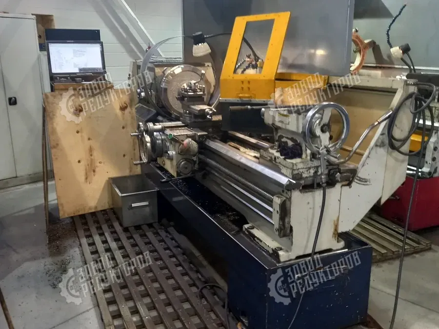

Дозаторы и питатели — это привод, который должен стабильно держать малую, заранее заданную производительность. Здесь важны не максимальная мощность, а низкие точные обороты, ровный момент и повторяемость от цикла к циклу. Поэтому редуктор для дозатора подбирают иначе, чем для конвейера или насоса: на первый план выходят передаточное число, стабильность хода на низах и возможность регулировать скорость. Разберём, на что смотреть и как не ошибиться.
Главная задача привода дозатора — выдавать строго определённое количество материала за единицу времени. Объёмный дозатор отмеряет порцию за оборот рабочего органа, поэтому производительность напрямую зависит от выходных оборотов. На практике это означает работу в диапазоне единиц и десятков об/мин, иногда ниже. От привода требуется не «крутить как можно сильнее», а держать заданную частоту вращения ровно, без рывков и проскальзываний.
Нестабильность хода на низких оборотах — главный враг точности. Биение момента, люфт в зацеплении и неравномерность нагрузки сразу превращаются в разброс дозы. Поэтому редуктор для дозатора должен иметь плотное зацепление, минимальный мёртвый ход и спокойную работу под переменной нагрузкой питаемого материала.

Поскольку дозу почти всегда нужно подстраивать под рецептуру, фракцию или сменное задание, привод дозатора делают регулируемым. Есть два рабочих пути.
Выбор зависит от того, насколько часто меняется задание и нужна ли интеграция с системой управления. Под весовое дозирование с обратной связью практичнее частотник; под объёмное дозирование стабильной партии достаточно вариатора.
Конструкция рабочего органа задаёт характер нагрузки на редуктор:
Для дозаторов и питателей чаще всего рассматривают два типа.
Червячный выигрывает по самоторможению и цене при малых оборотах, соосный — по КПД и сроку службы при длительной непрерывной работе. Окончательный выбор делают по требуемым оборотам, режиму и наличию обратной связи по скорости.
Силовой параметр подбора — крутящий момент на выходном валу, а не мощность мотора. Для дозатора момент должен надёжно преодолевать сопротивление материала, включая пиковые нагрузки на пуске под завалом. Номинальный момент редуктора выбирают с запасом — коэффициентом эксплуатации (сервис-фактором), который учитывает характер нагрузки, число пусков в час и продолжительность работы.
Для дозирующих приводов сервис-фактор обычно берут повышенным: шнек на пуске даёт ударную нагрузку, режим часто повторно-кратковременный с пусками и реверсами, а абразивный материал ускоряет износ. Недооценка сервис-фактора — самая частая причина выхода привода из строя по зубчатому венцу или червячной паре.

Точность дозы определяется не только рабочим органом, но и приводом. На повторяемость влияют:
Когда дозирование старт-стопное (порционная отгрузка по сигналу), особенно важны быстрый и точный останов и отсутствие выбега. Здесь помогают самоторможение червячной пары и, при необходимости, тормоз на двигателе.
| Производительность | требуемая доза, кг/ч или порция за цикл |
|---|---|
| Обороты | выходные об/мин и диапазон регулирования |
| Момент | рабочий и пусковой на выходном валу, Н·м |
| Материал | плотность, влажность, абразивность, фракция |
| Режим | S1 или старт-стопный, число пусков, реверсы |
| Регулирование | частотник, вариатор или фиксированная скорость |
| Тип | червячный или соосный, наличие самоторможения |
Даже верно рассчитанный редуктор для дозатора покажет разброс дозы, если привод смонтирован с перекосом или избыточной соосной нагрузкой. Тихоходный вал часто соединяют со шнеком или диском напрямую, поэтому важны точная центровка, допустимая радиальная и осевая нагрузка на выходной вал и качественная муфта или насадной монтаж на полый вал. Перекос вносит дополнительный паразитный момент, который на малых оборотах ощутимо искажает равномерность подачи и ускоряет износ подшипников тихоходной ступени.
Отдельно стоит продумать тепловой режим и обслуживание. На самых низких частотах самовентилируемый двигатель почти не охлаждается, поэтому при длительной работе закладывают принудительный обдув или запас по моменту, чтобы избежать перегрева. Доступ к сапуну, пробкам залива и слива масла должен оставаться свободным после установки в линию, а для пищевых и пыльных производств выбирают степень защиты и тип смазки под регламент мойки. Эти мелочи на этапе компоновки экономят простои и сохраняют точность дозирования на весь срок службы.
| Параметр | Ориентир |
|---|---|
| Точность дозирования | ±1–3 % порции, повторяемость от цикла к циклу |
| Малые обороты | 5–50 об/мин, стабильность хода без рывков |
| Момент | с запасом на пусковой пик под завалом материала |
| Частотник | векторное управление, обдув для устойчивости на низах |
| Тип редуктора | червячный или соосный по режиму и оборотам |
| Исполнение | IP65+, пищевая смазка NSF H1 при контакте с продуктом |
Редуктор для дозатора подбирают по производительности, выходным оборотам и характеру материала, а не по мощности мотора. Решите, нужно ли регулирование скорости и каким способом, заложите повышенный сервис-фактор под пусковые нагрузки шнека и выберите тип — червячный для малых оборотов с самоторможением или соосный для непрерывной энергоэффективной работы. Соберите параметры по чек-листу и отправьте на подбор редуктора по задаче — инженер Завода Редукторов рассчитает мотор-редуктор для питателя и пришлёт коммерческое предложение с ценой.
Редуктор для дозатора — это привод низких точных оборотов, где главное не мощность, а стабильность хода, ровный момент и повторяемость дозы. Под объёмное и весовое дозирование подбирают передачу с минимальным люфтом, повышенным сервис-фактором и нужным диапазоном регулирования скорости — червячную для малых оборотов с самоторможением или соосную для непрерывной энергоэффективной работы.
Редуктор для дозатора подбирают под низкие точные обороты, где важнее не мощность, а стабильность хода и повторяемость дозы. Для шнековых и весовых дозаторов берут передачу с минимальным люфтом: червячную для малых оборотов с самоторможением или соосную для непрерывной энергоэффективной работы.
Точность дозирования обеспечивают повышенный сервис-фактор, плавный момент и регулировка скорости частотником. Минимальный люфт в зацеплении исключает разброс дозы при реверсе и пуске, поэтому редуктор для дозатора рассчитывают с запасом по жёсткости и ресурсу.
| Параметр | Значение |
|---|---|
| Тип передачи | червячная, соосная |
| Обороты выхода | 5–60 об/мин |
| Люфт | минимальный |
| Регулировка | частотный преобразователь |
| Сервис-фактор | 1,4–1,8 |
| Условие | Исполнение |
|---|---|
| Режим работы | S1, точное дозирование |
| Самоторможение | да (червячная передача) |
| Повторяемость дозы | высокая |
| Монтаж | фланец, насадной вал |
| Степень защиты | IP54–IP55 |
Рассчитать привод под вашу производительность и обороты поможет калькулятор подбора редуктора. Готовые модели червячных и соосных мотор-редукторов для питателей и дозаторов смотрите в каталоге редукторов.
Точность определяется не редуктором, а стабильностью выходных оборотов под переменной нагрузкой шнека. Выбирайте передачу с жёсткой характеристикой и минимальным люфтом, а заданную производительность набирайте регулированием скорости. Соосные редукторы дают более ровный момент, что снижает пульсации потока материала. Готовый расчёт под нужную точность сделает калькулятор подбора.
Дозаторы и питатели обычно работают на 5–50 об/мин, поэтому нужен высокий передаточный диапазон. Червячные редукторы дают большое i в одной ступени и самоторможение, соосные двух-трёхступенчатые — те же обороты с лучшим КПД. Подбирайте по требуемым выходным об/мин, а не по мощности мотора.
Если производительность меняется по рецептуре, частотный преобразователь — самое гибкое решение: он плавно меняет обороты без замены редуктора. Для постоянного расхода достаточно фиксированного передаточного числа. При работе на низких частотах закладывайте мотор с принудительным охлаждением или запас по моменту.
Пищевое или нержавеющее исполнение нужно, если редуктор контактирует с зоной продукта или моется агрессивными средствами по нормам HACCP. Применяют гладкие корпуса, пищевые смазки NSF H1 и защиту IP65 и выше. Для дозаторов в технической зоне достаточно стандартного исполнения с подходящей степенью защиты.
Червячный удобен компактностью, большим i и самоторможением, которое удерживает шнек при остановке. Соосный выигрывает по КПД и ресурсу при непрерывной работе и высоких нагрузках. Для старт-стопных дозаторов с малыми оборотами чаще берут червячный, для линий непрерывной подачи — соосный. Тип под ваши условия подберёт калькулятор подбора.
Момент считают по сопротивлению шнека и заданным выходным оборотам, а не по мощности двигателя. Обязательно закладывайте сервис-фактор на пусковые пики, забивание и реверсы — для шнековых питателей это запас 1,5–2,0. Заниженный момент приводит к перегреву и поломке тихоходной ступени.
Пришлите производительность, материал и обороты — рассчитаем мотор-редуктор для питателя и пришлём КП в течение 15 минут.
Оставить заявку